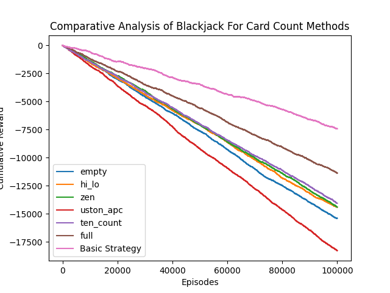

April 2025
Tools: Python, PyTorch

Cumulative reward over 100,000 episodes. The curves are an empty count, Hi-Lo, Zen, Uston APC, Ten Count, a full count, and basic strategy.
I built a blackjack engine that learns a playing policy with deep Q-learning. The network uses a dueling architecture: one stream estimates the value of the position, and another estimates the advantage of each action. The two combine into the action values the agent trains on.
The figure is a separate comparison I ran on the same game. It tracks cumulative reward for several card-counting systems and for basic strategy across 100,000 episodes. Every curve loses money. Basic strategy loses it more slowly than the counting methods in this run, which is a useful check that the simulator is behaving like a casino shoe.
The agent uses experience replay, a target network, and epsilon-greedy exploration. I compared it with tabular Q-learning and a rule-based strategy across hand and dealer combinations, and presented the results on a poster. The code is in this repository.